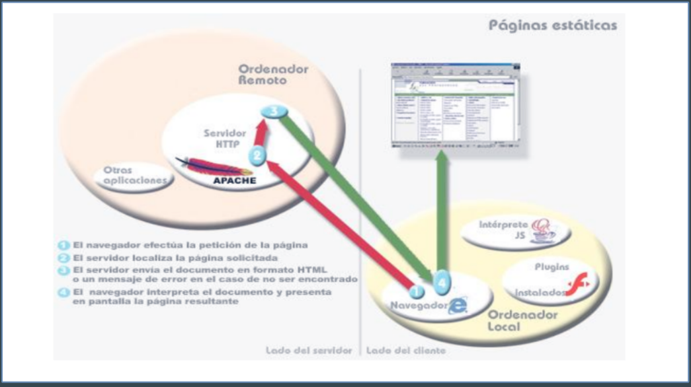
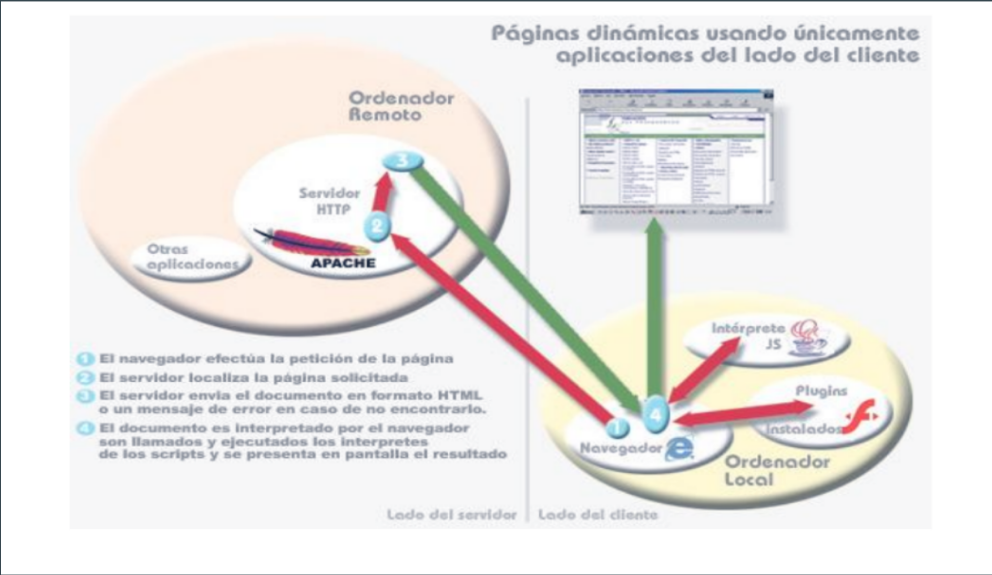

Unidad 1
Parte 1 - Evolución y características de los navegadores Web.
World Wide Web
- Representa un universo de información accesible a través de Internet
- Conjunto de recursos interconectados
- Componentes físicos: hubs, repetidores puentes Routers.
- Protocolos de comunicación: TCP IP HTTP FTP…
- Sistema de nombres de dominio (DNS)
- software para proveer y consumir dichos recursos: servidores y clientes.
- Configuración arquitectónica habitual basada en el modelo cliente/servidor
- Cliente: componente consumidor de servicios
- Servidor: proceso proveedor del servicio.


Navegador web
- Software Cliente para acceder a contenidos de los servicios de Internet
- Diferentes tipos en función de sus capacidades, lenguajes soportados o facilidad de configuración.
- La mayoría soporta de DHTML (Dynamic HTML) para otorgar mayor funcionalidad
- “Un navegador es una aplicación distribuida habitualmente como software libre, que permite a un usuario acceder a un recurso publicado por un servidor web descrito mediante una dirección URL” (Universal Resource Locator)”
Mosaic
- Uno de los primeros navegadores y el primero con capacidades gráficas
- Inicialmente ejecutado sobre Unix, posteriormente al resto de las plataformas
- Base para las primeras versiones de Internet Explorer y Mozilla
- Dejó de desarrollarse en 1997
Netscape Navigator
- Primero en incluir un módulo para la ejecucion de código script (JavaScript)
- Perdedor en la guerra de los navegadores contra Mocrosoft
- características base para Mozilla Firefox
Internet Explorer
- Navegador de Microsoft
- Cuota de distribución y uso elevada gracias a su integración en sistemas windows
- Descenso en los últimos años ante Firefox o Chrome
Firefox
- De código abierto, multiplataforma, de gran aceptación en comunidad de desarrolladores web
- Gran variedad de utilidades, extensiones y herramientas para la personalización y apariencia del navegador
- Fue uno de los primeros en incluir la navegación por pestañas
- Al ser multiplataforma, ha recortado la cuota de distribución que tenía Internet Explorer
Google Chrome
- De relativamente reciente creación, es el navegador de Google compilado a partir de componentes de código abierto
- Seguridad, velocidad y estabilidad son sus características
- Su rapidez y seguridad en los tests comparativos se debe a que sigue una arquitectura multiproceso en la que cada pestaña se ejecuta de forma independiente
Safari
- Navegador por defecto del sistema Apple
- Las últimas versiones incorporan la navegación por pestañas, corrector ortográfico en formularios, almacenamiento de direcciones favoritas, bloqueador de ventanas emergentes, soporte para motores de búsqueda personalizado o un gestor de descargas propio.
Dolphin Browser
- Popular en las plataformas de dispositivos móviles inteligentes (smartphones y tablets) y en los sistemas operativos incorporados en ellos
- Específico para Android
- Uno de los primeros en incluir soporte para navegación multitáctil
- Motor de renderizado de página similar a Google Chrome o Safari